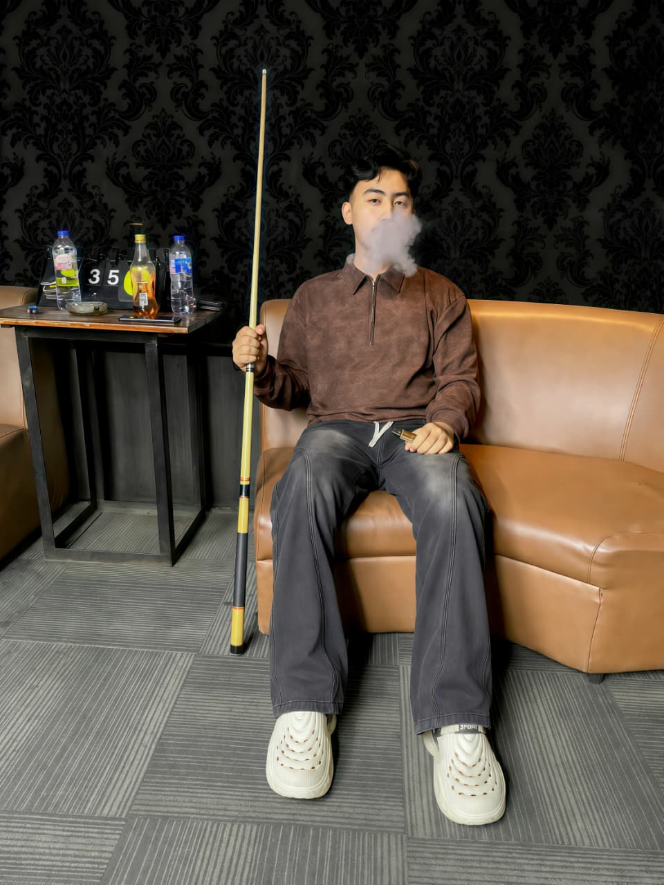

01
Teknologi
Mengikuti perkembangan teknologi, perangkat lunak, kecerdasan buatan, dan solusi digital yang dapat menjawab kebutuhan nyata.
Diskusikan teknologi ↗TECH
Halo, saya Wahyudi.
Technology Enthusiast & Tradepreneur yang tertarik pada inovasi digital, perkembangan teknologi, perdagangan, dan peluang untuk menciptakan nilai.

Saya percaya teknologi bukan hanya tentang perangkat atau sistem, tetapi juga tentang bagaimana ide dapat menjadi solusi dan membuka kesempatan baru.
Sebagai seorang Technology Enthusiast & Tradepreneur, saya menikmati proses mempelajari hal baru, melihat potensi, memahami kebutuhan, dan mengeksplorasi cara membangun sesuatu yang bermanfaat.
Mengikuti perkembangan teknologi, perangkat lunak, kecerdasan buatan, dan solusi digital yang dapat menjawab kebutuhan nyata.
Diskusikan teknologi ↗Melihat dinamika pasar, peluang produk, hubungan bisnis, dan pertukaran nilai.
Bahas peluang ↗Mengeksplorasi ide, membangun inisiatif, dan mengembangkan pola pikir kewirausahaan.
Mulai kolaborasi ↗Ide menjadi berarti ketika diwujudkan menjadi sesuatu yang bermanfaat.
Kumpulan ruang eksplorasi, ide, dan karya yang terus berkembang. Setiap kartu mewakili bidang yang sedang dipelajari dan dibangun.
SELECTED WORKS 01 — 03Eksplorasi antarmuka website yang bersih, responsif, dan mudah digunakan untuk menghadirkan pengalaman digital yang lebih baik.
Diskusikan ide ↗Mempelajari pemanfaatan kecerdasan buatan dan automasi untuk menyederhanakan proses serta membuka kemungkinan baru.
Diskusikan ide ↗Eksplorasi peluang perdagangan, pengembangan usaha, dan cara menciptakan nilai melalui kolaborasi.
Diskusikan peluang ↗Saya terbuka untuk bertukar gagasan, berdiskusi, dan menjajaki kolaborasi.